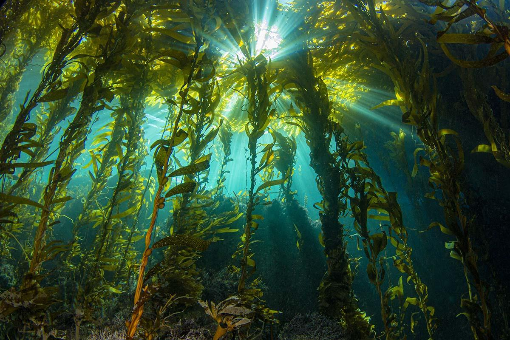

Cayne Layton is the co-founder of Blue Carbon Services, a team of experienced carbon offset experts and marine scientists, specialising in the development and management of Blue Carbon and habitat restoration projects.
The company offers a range of consultancy services to support Blue Carbon project conception, implementation and asset identification for private, public and government organisations throughout Australia and beyond.
In this edited conversation with Peter Green, Cayne spoke about his background and outlook on the seaweed industry before giving some advice for climate-focussed teams.
How has Blue Carbon Services evolved to where it is now?
Prior to being known as Blue Carbon Services we were academics and have worked in the academic industry for the last decade. We saw a need to link institutional research with people building operations on the ground and that's what motivated us to start BCS. We use our high-level technical expertise and background to act as that bridge. There are four co-founders, each with our own area of expertise. Despite our name being Blue Carbon Services, habitat restoration is also at the heart of what we do. This restoration unlocks all the ecosystem services that healthy habitats provide, whether that's for kelp forests, or other marine ecosystems like seagrass or salt marsh environments. We work across the entirety of this blue carbon space.
How has demand been for your services?
A lot of these industries are really taking off so the demand is there. That was partly why we started the company. Prior to BCS we would receive plenty of inquiries through our current work channels but it was very hard for us to provide advice or allocate time to helping out.

What's your opinion on the seaweed industry right now?
It's interesting because seaweed aquaculture has been happening for decades, arguably centuries. People in the western world see it as an infant industry but there is a wealth of knowledge available to us in this space.

In a similar way to other industries, there are always individuals who are pushing ahead on slightly unfounded scientific facts. That's very much where we see BCS fit in. We provide a lot of cutting-edge technical expertise.
Have there been any common challenges that the organisations you help face?
A big logistical challenge is regulation. In Australia, the regulation for seaweed industries is still emerging.
More broadly, I'd say hype can be a challenge. We spend a lot of time myth-busting. Nevertheless, despite the hype and somewhat-premature excitement (around kelp and blue carbon specifically), we still feel there is plenty of work to be done and opportunities for action and learning-by-doing. That's what we're excited to facilitate, by translating all that emerging science into on-ground innovation and progress.
Given your experience restoring the giant kelp forests in Tasmania, what's your opinion on the role seaweed can play in regulating CO2 on this planet?
There are some big challenges and the first relates to scale. If we want to have any impact on the climate, seaweed aquaculture is going to have to be global. That's clearly a big challenge.
Part of the problem is that we're getting too focussed on this carbon question. There are so many incredible ecosystem services that these habitats provide. We still want to be planting, restoring and cultivating them as much as possible, irrespective of their sequestering capability.
What's next for Blue Carbon Services?
We will continue to solidify our relationships with clients, and potentially work alongside government to quantify and understand blue carbon assets effectively. That's a very interesting space. The Australian Federal Government is becoming more interested in developing blue carbon credits. When that happens, these habitats will suddenly become valuable financial assets. That's something we're really looking forward to.
Firstly, just do it. If you're waiting for the right time you'll probably be waiting forever, there's no right time.
Secondly, don't necessarily feel that you must stop what you're doing immediately. There's a lot to be said for making a more gradual transition from one area of work to another.
What books would you recommend to others involved in this space?
I do a lot of work with Indigenous Australians and Indigenous Tasmanians. A lot of the ways these indigenous communities approach science and interact with the natural world is unique. There are many important lessons to be gained from those communities. "Dark Emu" by Bruce Pascoe is a famous Australian book in this area. "Australia's First Naturalists" is another great book which highlights early indigenous scientific knowledge in Australia.
Interviewer: Peter Green